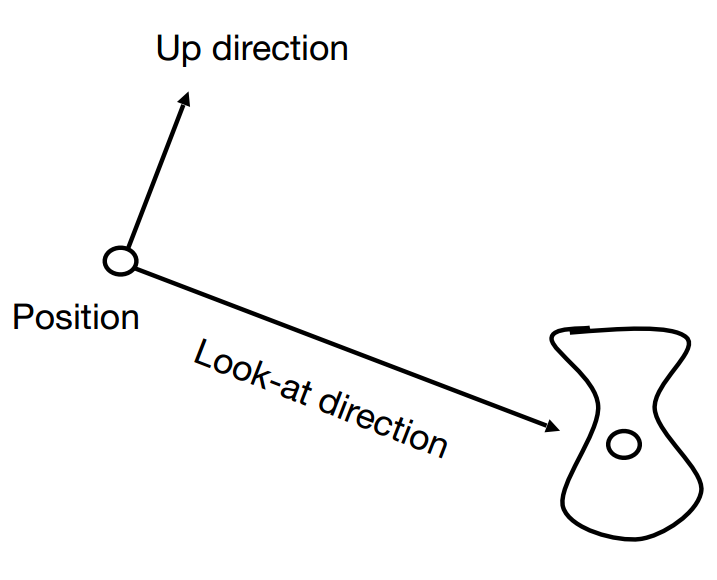
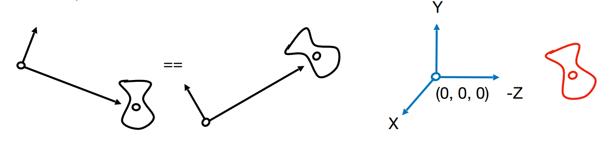
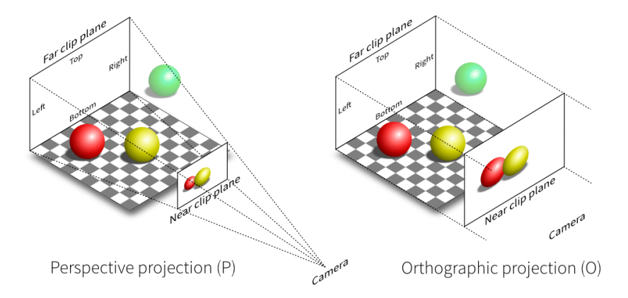
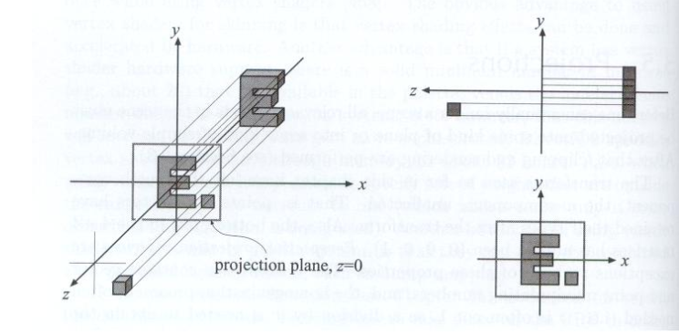
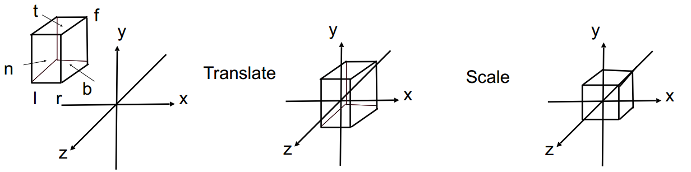
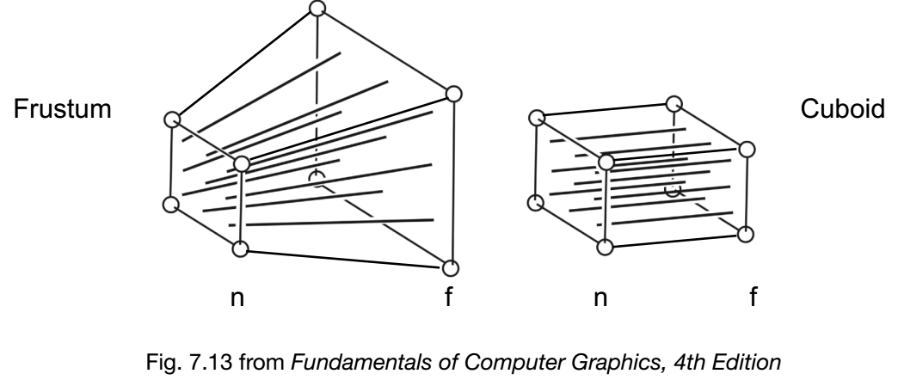
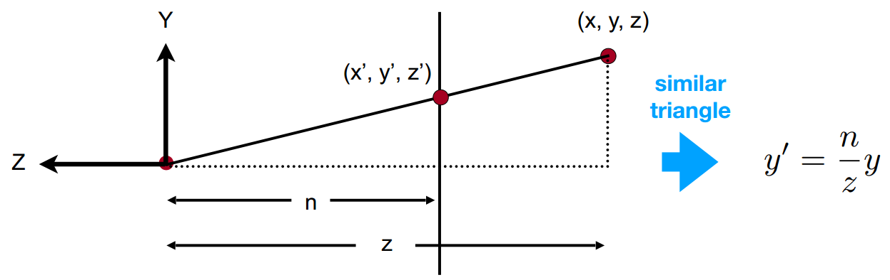
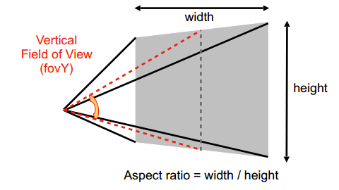
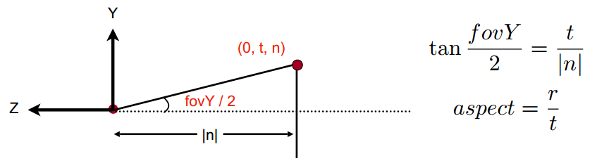
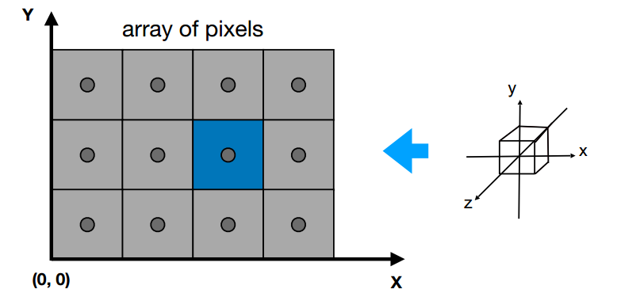

1. 3D旋转
如果我们用齐次坐标(homegeneous coordinates)来表示3D空间中的点和向量，点的齐次坐标表达形式为$(x, y, z, 1)^{\top}$,而向量的齐次坐标表达形式为$(x, y, z, 0)^{\top}$
通常来说，假设有3D空间中点的齐次坐标$(x, y, z, w)^{\top}$(其中$w$ !=0),我们可以转化得到其对应的普通坐标点$(x/w,y/w,z/w)$
对于任意一个旋转，我们可以等效为3个绕轴旋转的组合，即：
1.1 Rodrigues 旋转矩阵
绕轴$n$旋转角度$\alpha$,可以写成下面的公式：
2. Viewing Transformation 观测变换
在图形学中有比较多的变换，我们可以用现实生活中的照相来举例。
- 首先，我们需要确定拍摄对象的位置，这一步对应的是model transformation；
- 其次，我们需要确定相机拍摄位置和拍摄角度，这一步对应的是view transformation；
- 最后，当然是按下相机的快门形成成像，这一步对应的是projection transformation。
总的来说，就是MVP变换(Model、View、Projection)。而model transformation就是对物体做一些变换，比如平移、旋转、缩放等等，比如下面这个代码就是将物体绕z轴做旋转：1
2
3
4
5
6
7
8
9
10
11
12
13
14
15
16
17// 模型变换的变换矩阵，即移动物体的位置，这里是绕z轴旋转某个角度
Eigen::Matrix4f get_model_matrix(float rotation_angle)
{
Eigen::Matrix4f model = Eigen::Matrix4f::Identity();
// TODO: Implement this function
// Create the model matrix for rotating the triangle around the Z axis.
// Then return it.
Eigen::Matrix4f rotate;
rotate << cos(MY_PI/180.0*rotation_angle), -sin(MY_PI/180.0*rotation_angle),0,0,
sin(MY_PI/180.0*rotation_angle), cos(MY_PI/180.0*rotation_angle),0,0,
0,0,1,0,
0,0,0,1;
model = rotate * model;
return model;
}
2.1 View/Camera Transformation 视图变换
视图变换相当于拍照过程中的相机位置和角度的设置过程，为了确定相机的摆放，需要确定3个量：
- position 位置$e$
- look-at direction 往哪儿看 $\hat{g}$
- up direction 向上方向 $\hat{t}$

说明一下：为什么这里叫up-direction呢？闫令琪教授的解释说法是，我们可以想象在相机的头上插一根草，然后无论我们是怎么侧动相机，那根草的方向就是上方向。
为了方便计算和处理，我们约定把相机位置放在“标准位置”上，即原点$(0,0,0)$位置，并且约定相机的look-at方向为$-z$,up direction 为$y$轴的方向。
随后，把物体也做一次与相机位置移动相同的变换即可。二者仍然保持相对静止，生成的图像也必然是一样的。

所以，这里就有引发了我们需要解决的问题，即如何找到一个变换矩阵$M_{view}$使得相机可以被移动到“标准位置”呢？Okay，我们可以这样一步步分解来做：
- 先把相机位置移动到原点；
- 再把$\hat{g}$旋转到$-z$方向；
- 把上方向$\hat{t}$旋转到$y$方向；
- 把$\hat{g}$x$\hat{t}$(这里是叉乘)旋转到$x$方向。
也就是先平移，再加上一系列旋转的操作，即$M{v i e w}=R{v i e w} T{v i e w}$。平移变换矩阵肯定很好写，就是$T{v i e w}=\left[\begin{array}{cccc}1 & 0 & 0 & -x{e} \ 0 & 1 & 0 & -y{e} \ 0 & 0 & 1 & -z_{e} \ 0 & 0 & 0 & 1\end{array}\right]$了，而旋转的变换矩阵就有点困难直接求解了。
可是我们知道，旋转操作的变换矩阵是一个正交矩阵。什么是正交矩阵呢，也就是说，如果一个矩阵的逆等于矩阵的转置，那么我们就叫这个矩阵为正交矩阵。Ok，我们说上述旋转变换矩阵很难直接求，可是它的逆操作我们很好求呀，也就是：
- 先把$x$旋转到$\hat{g}$x$\hat{t}$(这里是叉乘)方向。
- 再把上方向$y$旋转到$\hat{t}$方向；
- 再把$z$旋转$-\hat{g}$到方向。
也就是$R{v i e w}^{-1}=\left[\begin{array}{cccc}x{\hat{g} \times \hat{t}} & x\hat{t} & x{-\hat{g}} & 0 \ y{\hat{g} \times \hat{t}} & y\hat{t} & y{-\hat{g}} & 0 \ z{\hat{g} \times \hat{t}} & z\hat{t} & z{-\hat{g}} & 0 \ 0 & 0 & 0 & 1\end{array}\right]$，于是我们需要的旋转变换矩阵$R{v i e w}=\left[\begin{array}{cccc}x{\hat{g} \times \hat{t}} & y{\hat{g} \times \hat{t}} & z{\hat{g} \times \hat{t}} & 0 \ x\hat{t} & y\hat{t} & z\hat{t} & 0 \ x{-\hat{g}} & y{-\hat{g}} & z{-\hat{g}} & 0 \ 0 & 0 & 0 & 1\end{array}\right]$。
2.2 Projection Transformation 投影变换
投影变换在图像学中用的很多，主要目的就是把3维空间中的物体投影到2维成像空间上来，而投影变换又有两种：
- 正交投影(orthographic projection)
- 透视投影(perspective projection)

2.2.1 正交投影
正交投影就是假设相机所在位置无限远，于是成像中很难区分物体的远近；而透视变换中就更加符合我们人眼成像的情况，会出现“近大远小”的视觉感官。
举个例子，我们假设相机在“标准位置”，对于正交投影，我们先把物体的左边全部投影到$xoy$平面，然后再把成像平面的$z$坐标给它丢掉，于是就形成了正交投影的成像。

一般地，为了完成正交投影，假设有一个长方体，它的左右、下上、远近分别是$[l,r],[b,t],[f,n]$,我们需要这样做：
- 先将物体的中心移动到坐标;
- 再在3个轴上做缩放到$[-1,1]$，使得成为一个normalized的立方体。

于是正交投影的变换矩阵为:
2.2.2 透视投影
透视投影就是为了使得成像有“近大远小”的效果，且会出现原本平行的线不再平行的效果。
这是什么意思呢？假设在3维空间中有两个物体，一个在远处一个在近处，我们以近处的成像平面为参照（即假设近处的平面是不动的），把远处的物体进行适当的缩放到近平面上来，从而远处的物体被一定程度上缩小了。当然，“近大远小”并不是说近的物体始终比远的物体大，如果远的物体超级超级大，它缩放到近平面还是有可能比近处的物体大的，也就是下面这张图的意思。

好的，现在我们就是要去找到透视投影的变换矩阵，直接去硬求透视投影的变换矩阵当然可以，肯定会比较爆炸。我们可以继续分解：
- 先做一个“挤压”操作，把frustum挤压成一个cuboid；
- 然后再做一次正交投影(这个我们已经会了)
所以主要问题还是处理怎么挤压的问题，我们先看一下上图对应的侧视图：

上图中最左侧红色的点就是位于“标准位置”的相机，即look-at方向为$-z$，up-direction为$y$，处于原点位置。而第一个平面就是近平面，第二个则是远平面了。根据相似三角形定理，我们很容易知道$y^{\prime}=\frac{n}{z} y$，
同理$x^{\prime}=\frac{n}{z} x$，用齐次坐标来表示就是$\left(\begin{array}{l}x \ y \ z \ 1\end{array}\right) \Rightarrow\left(\begin{array}{c}n x / z \ n y / z \ \text { unknown } \ 1\end{array}\right)$，根据齐次坐标的性质，我们可以对$\left(\begin{array}{c}n x / z \ n y / z \ \text { unknown } \ 1\end{array}\right)$同时乘上一个$z$(假设$z$不等于0),于是。有$\left(\begin{array}{c}n x / z \ n y / z \ \text { unknown } \ 1\end{array}\right) \begin{array}{c} ==\end{array}\left(\begin{array}{c}n x \ n y \ \text { still unknown } \ z\end{array}\right)$。
但这里有个困难，我们还是不知道$z$会有怎样的相应变换。
也就是说，我们知道挤压操作的变换矩阵$M{p e r s p \rightarrow o r t h o}^{(4 \times 4)}$可以使得$M{p e r s p \rightarrow o r t h o}^{(4 \times 4)}\left(\begin{array}{l}x \ y \ z \ 1\end{array}\right)=\left(\begin{array}{c}n x \ n y \ \text { unknown } \ z\end{array}\right)$，并且我们可以确定变换矩阵是形如$M_{p e r s p \rightarrow o r t h o}=\left(\begin{array}{cccc}n & 0 & 0 & 0 \ 0 & n & 0 & 0 \ ? & ? & ? & ? \ 0 & 0 & 1 & 0\end{array}\right)$的样子，可是第3行中的数怎么确定呢？
我们又注意到：①在近平面($z$坐标为$n$)的所有点是不会动的；②并且在远平面($z$坐标为$f$)上的点，$z$坐标是不会变的，变的只是$x$和$y$。
对于第一条，我们先根据齐次坐标的性质，对点$\left(\begin{array}{l}x \ y \ n \ 1\end{array}\right)$都乘上一个$n$，即$\left(\begin{array}{l}xn \ yn \ n^2 \ n\end{array}\right)$,且我们可以确定第3行的前2个未知量？肯定是0，于是有：
再对于第二条，同理我们可以得到：
联立两个方程可以确定$A=n+f$，$B=-n f$，于是我们就求出了挤压操作的变换矩阵$M_{presp->ortho}$。最后再做一次正交投影即可完成整个透视投影了，即：
有了上述的变换矩阵，我们千真万确，真的可以把一个frustum变成一个cuboid，只要知道上述的$l,r,b,t,f,n$即可，但是习惯上，大家并不喜欢用这么多参数，为了简化参数的数量，一般会这么干：

这里会定义一个针对于frustum近平面的视野角度(filed of view,FOV)，注意，这个角度是对于没做view transformation之前的量,做了view transformation之后，fov肯定是1了，因为我们已经把cuboid的x轴和y轴的范围限定在了$[-1,1]$之间，且是宽度和高度关于原点对称的。我们来看下与之对应的侧视图：

因此，我们有了fov,aspect ratio,n,f这四个参数，$l,r,b,t,f,n$就可以相应地计算出了。又由于cuboid的宽度和高度两个轴是关于原点对称的，所以有$l=-r, b=-t$,但z轴不一定哈！
所以projection transformation的代码实现可以写成如下这样:1
2
3
4
5
6
7
8
9
10
11
12
13
14
15
16
17
18
19
20
21
22
23
24
25
26
27
28
29
30
31
32
33
34
35
36
37// 投影视图的变换矩阵，这里求的是透视投影
Eigen::Matrix4f get_projection_matrix(float eye_fov, float aspect_ratio,
float zNear, float zFar)
{
Eigen::Matrix4f projection = Eigen::Matrix4f::Identity();
Eigen::Matrix4f persp2ortho;
persp2ortho<< zNear,0,0,0,
0,zNear,0,0,
0,0,zNear+zFar,-zNear*zFar,
0,0,1,0;
// According to aspect ratio and fovY(field of view Y),
// we can calculate t,b,l,r,n,f these six params.
float yTop,yBottom,xLeft,xRight;
yTop = tan(eye_fov/2.0)*abs(zNear);
yBottom = -yTop;
xRight = aspect_ratio * yTop;
xLeft = -xRight;
Eigen::Matrix4f ortho,scale,translation;
scale << 2.0/(xRight-xLeft),0,0,0,
0,2.0/(yTop-yBottom),0,0,
0,0,2.0/(zNear-zFar),0,
0,0,0,1;
translation << 1,0,0,-(xRight+xLeft)/2.0,
0,1,0,-(yTop+yBottom)/2.0,
0,0,1,-(zNear+zFar)/2.0,
0,0,0,1;
ortho = translation * scale;
projection = ortho * persp2ortho;
return projection;
}
2.3 Viewport Transformation 视口变换
在做完了上述的MVP变换后，我们接下来要做的就是把标准化好的cuboid画到成像图片中一个一个的像素上去了，也就是光栅化的过程(Rasterize)。假设成像图片的宽高为width和height，我们要做的就是把cubiod的x轴和y轴的范围从$[-1,1]$转为$[0,width]$和$[0,height]$

这个也很容易做到，做个缩放就好了，我们把这个过程称为Viewport Transformation，其对应的变化矩阵为：